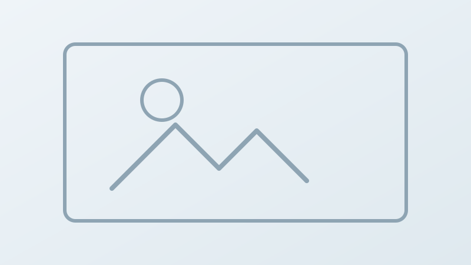

Projects
Selected Work and Learning Outcomes
Explore each project with context, key outcomes, what I learned, and my personal contribution.

Dissectionary is an educational web platform developed to help users explore human anatomy and test knowledge through guided quizzes.
I worked on a structured web interface, quiz flow, and clear information presentation for a user-friendly learning experience.
I contributed as a developer, focusing on implementation quality, logical structure, and practical user experience.
This project supports fitness coaching workflows by managing training sessions, materials, and customer guidance in one platform.
The current version includes early workflow planning, data handling structure, and core web modules for future expansion.
I worked as a team developer with focus on clean implementation and translating requirements into usable features.
Playcycle is a concept for a modular game controller designed to reduce electronic waste through replaceable and reusable parts.
I developed the concept direction, value proposition, and sustainability-oriented product thinking.
I led the idea and concept development, including the core motivation and practical application framing.
This portfolio project is built to present my profile, projects, and CV in a clear and professional way for coaching and evaluation.
I implemented a responsive multi-page site with light and dark mode support, structured navigation, and clear content blocks.
I designed and implemented the full structure and presentation logic, then refined it based on iterative feedback.